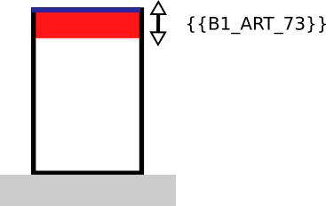

IAUIDF-003 - Distance par rapport au fond de parcelle
Modèle de phrase
Une distance de m doit être respecté par rapport au fond de la parcelle.
Paramètres
B1_ART_73
Distance minimale des constructions par rapport à la limite séparative de fond de parcelle.
Valeurs particulières :
- 99 : non réglementé
Explications
Un recul de m s'applique par rapport au fond de la parcelle.

Implémentation
La vérification de la distance s'effectue dans la classe PredicateIAUIDF sauf si les valeurs sont 88 et 99.